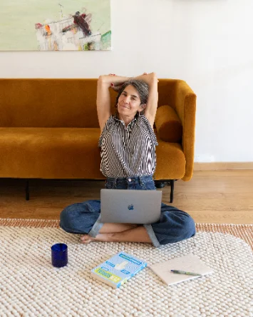

ALMAVIVA · Coaching & Práctica
Sesiones
Individuales.
Coaching, autoconocimiento y práctica para ti.
Un espacio para detenerte, mirarte y ganar claridad.
Para momentos en los que necesitas pausar, ordenar lo que estás viviendo, escucharte con más profundidad y encontrar una dirección más coherente contigo.

Detenerse
Quizás no necesitas tener todo claro. Quizás solo necesitas detenerte.
En un mundo cada vez más acelerado, exigente y lleno de ruido, es común sentirse desconectade de une misme, perder claridad o vivir en automático sin saber bien por qué.
A veces seguimos funcionando por fuera, pero por dentro algo nos pide detenernos.
Este espacio existe para abrir una conversación honesta contigo, mirar lo que está ocurriendo y empezar a ordenar lo que hoy necesita atención.
En este espacio puedes trabajar
Una sesión, muchas puertas de entrada
No son pasos rígidos. Son entradas posibles según lo que necesites trabajar.
Una sesión, muchas puertas de entrada
Se adapta a lo que necesitas mirar, ordenar o integrar.
01
Detenerte
Pausar
Bajar el ritmo, salir del automático y mirar lo que vives con más claridad.
02
Claridad
Mirar
Ordenar lo que te pasa, lo que te frena o lo que necesita atención ahora.
03
Autoconocimiento
Escucharte
Reconectar con lo que sientes, necesitas y valoras a través de la escucha.
04
Dirección
Orientarte
Transformar la confusión en una dirección posible y coherente contigo.
05
Herramientas
Practicar
Llevarte ejercicios, escritura, respiración o mindfulness según necesites.
06
Vida real
Integrar
Buscar una forma sencilla de llevar lo trabajado a tu día a día.
Cada sesión se adapta a lo que necesitas mirar, ordenar o integrar en ese momento.
Mi enfoque integral
Equilibrio en todas las dimensiones de tu vida
Un mismo proceso
Emocional
Exploramos lo que sientes, lo que te mueve por dentro y cómo relacionarte con tus emociones con más conciencia.
Mental
Observamos tus pensamientos, creencias, patrones internos y la forma en que interpretas lo que estás viviendo.
Física
Escuchamos el cuerpo, la energía, la respiración y las señales físicas que también forman parte de tu experiencia.
Las Sesiones Individuales ALMAVIVA combinan herramientas de desarrollo humano, autoconocimiento y prácticas de coaching para ayudarte a encontrar el equilibrio que necesitas en las dimensiones emocional, mental y física.
A través de una escucha profunda, te invito a mirar lo que hoy te pasa, lo que te frena o lo que necesitas ordenar, y convertirlo en claridad y dirección.
Aquí exploramos lo que está ocurriendo, ampliamos tu conciencia, identificamos qué necesita tu atención ahora y diseñamos un siguiente paso posible, concreto y coherente contigo.
Te acompaño a reconectar con tu propósito, tu mundo interior y tus recursos internos.
Mi rol
Aquí no trabajamos desde la idea de que alguien tiene que arreglarte.
Tú tienes recursos, intuición, experiencia, valores, talentos y capacidad de transformación. Mi rol es acompañarte a acceder a eso con más claridad.
Cómo trabajo
El coaching es el eje. Las herramientas se activan según lo que necesites.
Mi enfoque es integrativo: el coaching es el eje central, y dentro de ese espacio conviven herramientas que se activan según tu momento.
Herramientas
Recursos que se activan según lo que necesites.
Inteligencia emocional
Comprender lo que sientes
Escritura reflexiva
Ordenar desde la palabra
Trabajo con valores
Volver a lo esencial
Propósito de vida
Dar dirección y sentido
Respiración consciente
Regular desde el cuerpo
Mindfulness
Traer atención al presente
Exploración corporal
Escuchar lo que el cuerpo expresa
No son técnicas sueltas. Son recursos que se integran dentro del proceso de coaching, al servicio de lo que estás trabajando.
Todo se adapta a tu momento y a lo que realmente necesitas.
Este espacio es para ti si…
Quizás te reconoces en algo de esto
Necesitas una pausa para mirar lo que estás viviendo con más claridad.
Sientes que entiendes muchas cosas, pero no logras aterrizarlas.
Quieres ordenar una etapa de cambio o transición.
Buscas un espacio seguro de escucha profunda y reflexión.
Sientes que perdiste conexión con lo que te importa o con tu dirección.
Quieres reconectar contigo sin necesidad de un proceso largo.
Tienes una decisión importante y necesitas perspectiva.
No sabes bien qué necesitas, pero sabes que necesitas detenerte.
Este espacio no exige tener todas las respuestas. Empieza justamente cuando necesitas escucharte mejor.
Cuando necesitas otro camino
Quizás lo que buscas es un proceso con más estructura
Las Sesiones Individuales son un punto de partida flexible. Pero quizás necesitas otro camino si…
Programa de 10 sesiones
ALMAVIVA Foco
Si sabes que tienes un patrón concreto que quieres transformar, ALMAVIVA Foco puede ser más adecuado: 10 sesiones con progresión diseñada para trabajar un tema específico en profundidad.
Conocer másProceso amplio y estructurado
ALMAVIVA Intensivo
Si sientes que no es solo un tema, sino cómo funcionas en general, ALMAVIVA Intensivo ofrece un proceso más amplio y estructurado.
Conocer másNo hay un camino mejor que otro. Hay un camino más adecuado para tu momento.
Formatos disponibles
Elige el formato que se adapta a tu momento
Sesión individual
1 hora
$55.000
Un espacio para pausar, mirar lo que estás viviendo y ordenar el siguiente paso con claridad.
Agendar sesiónSesión profunda
2 horas
$80.000
Un espacio más amplio para profundizar, ordenar con más calma y trabajar un tema con mayor profundidad.
Agendar sesión profundaSi después de algunas sesiones individuales descubres que necesitas un proceso con estructura, dirección y acompañamiento sostenido, ALMAVIVA Foco o ALMAVIVA Intensivo pueden ser tu siguiente paso. El valor de las sesiones individuales que ya tomaste se considera al hacer esa transición.
Si tu situación económica no te permite acceder y realmente quieres hacerlo, puedes escribirme para revisar opciones.
Modalidad y cómo empezar
Sesiones online, a tu ritmo y según tu disponibilidad
En línea
Las sesiones se realizan online vía Zoom, desde donde te encuentres.
Coordinación
Los días y horarios se coordinan previamente según disponibilidad.
Primer paso
Escríbeme directamente: conversamos sobre lo que necesitas, resolvemos dudas y coordinamos tu primera sesión.
No necesitas tener todo claro para dar el primer paso.
Solo necesitas querer darlo.
Por qué te puedo acompañar
Acompaño desde donde yo también tuve que volver a mí
Durante mucho tiempo viví desconectada de mí. Atravesé depresión, ansiedad, adicciones, autoexigencia y un diálogo interno duro. A los 32 años logré iniciar un camino profundo de transformación personal, y desde entonces no he parado de formarme, transformarme e invertir en mi propio proceso de crecimiento y aprendizaje.
La neurociencia y el coaching me dieron un mapa para comprender mi historia desde otro lugar. Me ayudaron a entender que muchas de nuestras reacciones no son defectos personales, sino respuestas aprendidas.
Pero el conocimiento, por sí solo, no me transformó. La transformación comenzó cuando empecé a llevar ese conocimiento al cuerpo: a respirarlo, sentirlo, practicarlo e integrarlo en mi vida real.
Y de esa integración entre ciencia, cuerpo y experiencia nació ALMAVIVA.
¿Cómo empezar?
Escríbeme cuando quieras dar el paso
Convicción fundadora
No se trata de cambiar quién eres.
Se trata de aprender a habitarte con más presencia, claridad y confianza.